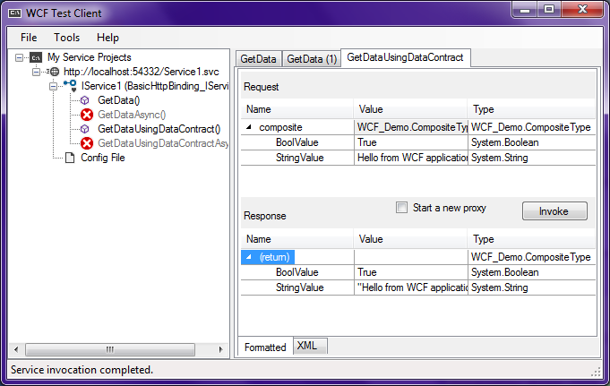
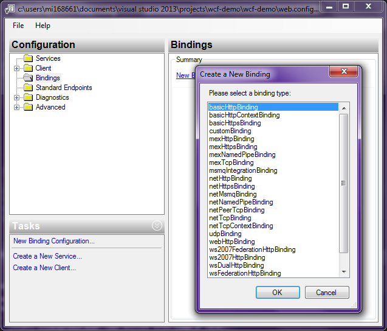

Microsoft provides a load of documentation on this, so it’s definitely well documented and maintained, which makes it ideal for a Service Oriented Architecture (SOA) solution with numerous applications. A service provided by a WCF application should be accessible to other applications, regardless of the programming languages they were created with or the platforms they might be running on, which is the whole point of adding APIs to services. WCF is basically another interoperability solution that which can communicate using SOAP and REST, and also make use of commonly used WS components.
When creating a new WCF project, there are four project type templates. For the purpose of this demo I selected ‘
WCF Service Application‘.
The project template uses the following libraries:
- System.Runtime.Serialization
- System.ServiceModel
- System.ServiceModel.Web
The project template gives us three source files we’re interested in:
- Web.config: Configuration for the Web server and service bindings (such as HTTPS).
- Service1.svc: Contains the procedures/methods that implement whatever functionality for the services, and the data returned.
- IService1.cs: Defines the interface for the called procedures, and the data types they handle.
This is where the concept of interfaces and implementations becomes important. Typically this is used in ASP.NET MVC as a way to ‘decouple’ methods from the core application, which makes it easier to modify an application’s functionality as a modular system. Where methods are called directly in a conventional program, here a requesting object calls an interface that contains references to whichever methods implement the requested functionality. This is sometimes referred to as a ‘loosely coupled’ system.
In the WCF project we have a source file (
Service1.svc.cs) that contains the methods that implement services by processing and returning variables. In another source file (
IService1.cs) we have an interface that contains references to the methods.
The project template can be executed as is in Visual Studio, without any modification. Click on
Service1.svc and hit F5. This will launch the WCF Test Client.

In the window to the left, there is an entry for the
IService interface, and the references to the
GetData() and
GetDataUsingDataContract() methods. Return values are displayed in the main window after the methods are invoked.
WCF Configuration and Service Options
Right-click the
Web.config entry in the Solution Explorer, and select ‘
Edit WCF Configuration‘. This will open the Microsoft Service Configuration Editor.

The important options here:
- Services: Create New Service appears to enable the developer to import a class/service from another object on the local system that has .NET classes. The ‘GAC’ option lists numerous other resources that could provide WCF services.
- Client: A client configuration can be created for accessing a service. This configuration defines the message transport method (TCP, HTTP, pipes, P2P, etc.), the contract used and the endpoint address.
- Bindings: The Bindings option specifies the transport protocol for requests and responses.
- Standard Endpoints: The types of service to be provided, such as service announcement, service discovery, message exchange and workflow control.